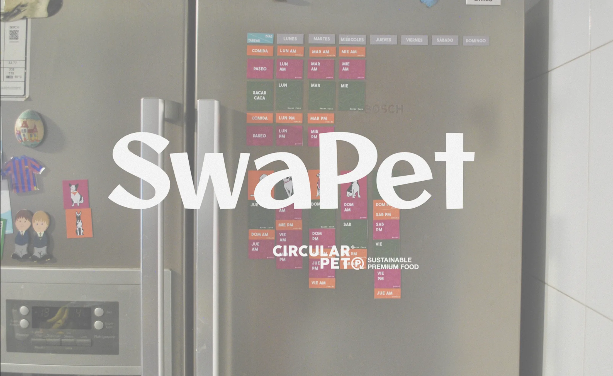
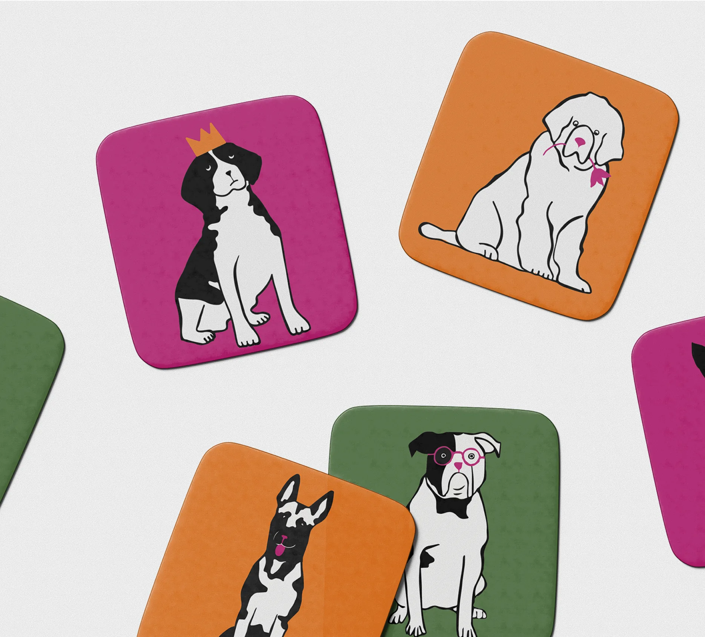
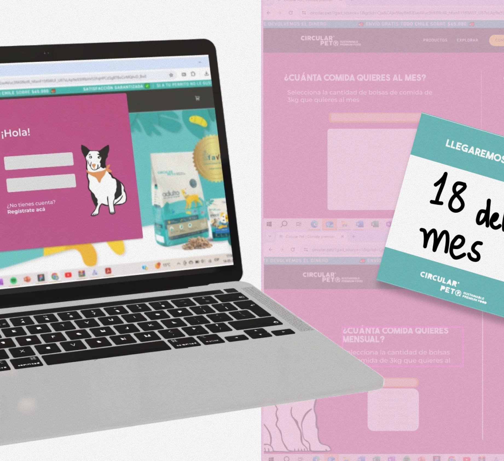
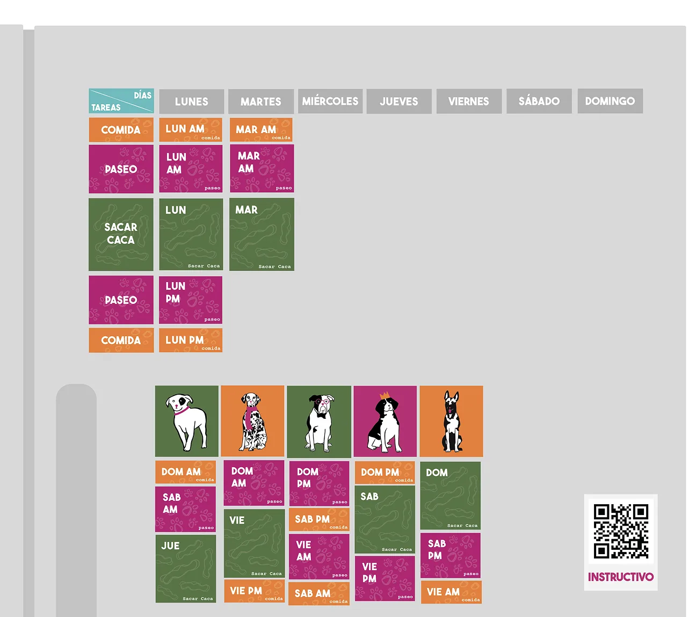
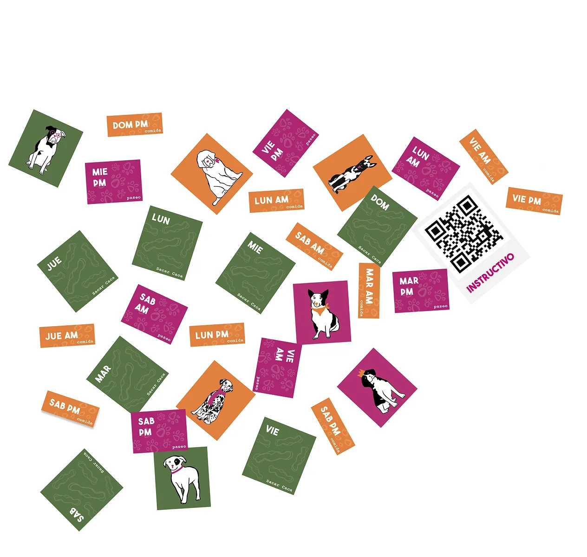
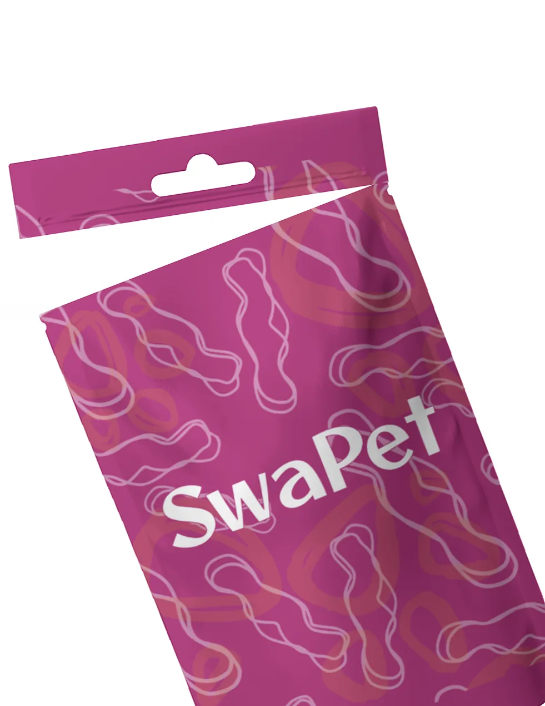

SwaPet
A play based system that helps families organise around caring for their dog.
2024
Taller V, Diseño UC
CircularPet
5 designers
Horizontal teamwork across every stage of the project

From an open brief to a family ritual
CircularPet came with an open brief, to innovate around its brand. Through fieldwork we found that many families take in a dog without a clear way to share its care. SwaPet turns the brand's products into an experience, an organising device that uses game mechanics to distribute care tasks among family members.





Extensive fieldwork with families using creative research methods from Universal Methods of Design
Highest grade, among the best proposals of Taller V
An open brief is an opportunity. Finding the right problem was worth more than the first product idea.